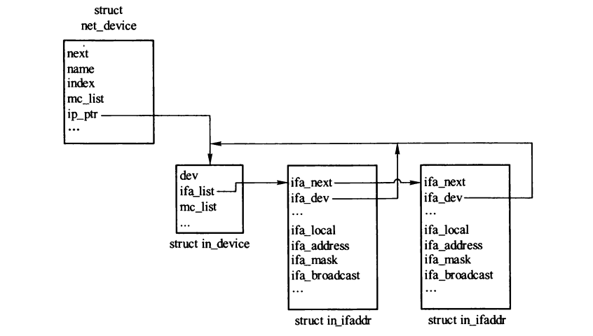
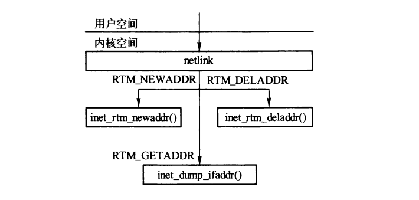
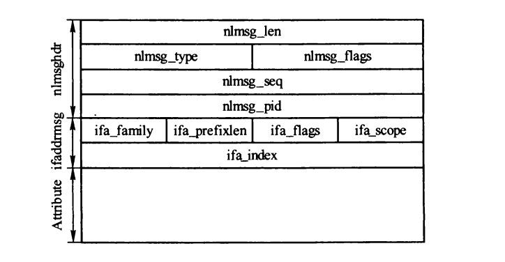
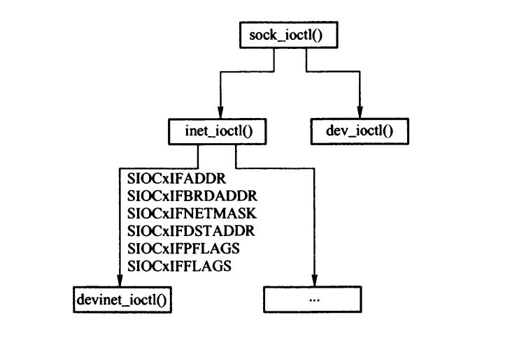

IP编址
Table of Contents
1. 接口和IP地址
1.1. IP地址的组织
IPv4相关的配置信息存放在in_device结构中，IP地址、子网掩码、广播地址等信息存放在in_ifaddr结构中。

Figure 1: net_device结构及地址信息
1.2. in_device结构
struct in_device { struct net_device *dev; //所属网络设备 atomic_t refcnt; //引用计数 int dead; //为1时，表示配置块将要被释放，不允许访问 struct in_ifaddr *ifa_list; /* ip地址链表 */ //...... struct neigh_parms *arp_parms; //存储和ARP相关的参数 struct ipv4_devconf cnf; //网络设备接口的ipv4设置 struct rcu_head rcu_head; //通过rcu机制释放IP配置块 };
1.3. in_ifaddr结构
struct in_ifaddr { struct in_ifaddr *ifa_next; //连接ip地址链表的元素 struct in_device *ifa_dev; //所属的ip配置块 struct rcu_head rcu_head; __be32 ifa_local; __be32 ifa_address; //点对点时为对端的IP地址 __be32 ifa_mask;//子网掩码 __be32 ifa_broadcast;//广播地址 __be32 ifa_anycast; unsigned char ifa_scope;//寻址范围 unsigned char ifa_flags;//地址属性 unsigned char ifa_prefixlen; //子网掩码长度 char ifa_label[IFNAMSIZ]; };
2. 地址相关函数
2.1. 地址类型
- 主IP地址: 同一寻范围中，第一个配置到网络设备的地址。
- 从属IP地址: 同一寻址范围的多个IP地址
- IP别名
2.2. inetdev_init()
为设备分配并绑定IP地址块
struct in_device *inetdev_init(struct net_device *dev) { struct in_device *in_dev; //分配IP地址块 in_dev = kzalloc(sizeof(*in_dev), GFP_KERNEL); INIT_RCU_HEAD(&in_dev->rcu_head); memcpy(&in_dev->cnf, &ipv4_devconf_dflt, sizeof(in_dev->cnf)); in_dev->cnf.sysctl = NULL; in_dev->dev = dev; //分配邻居协议参数配置块，并根据ARP表初始化 if ((in_dev->arp_parms = neigh_parms_alloc(dev, &arp_tbl)) == NULL) goto out_kfree; /* Reference in_dev->dev */ dev_hold(dev); //为邻居子系统注册相关的系统参数 neigh_sysctl_register(dev, in_dev->arp_parms, NET_IPV4, NET_IPV4_NEIGH, "ipv4", NULL, NULL); in_dev_hold(in_dev); //注册IP相关的系统参数 devinet_sysctl_register(in_dev, &in_dev->cnf); ip_mc_init_dev(in_dev); //初始化IGMP模块 if (dev->flags & IFF_UP) ip_mc_up(in_dev);//初始化网络设备的组播信息 //绑定分配的IP地址块到dev rcu_assign_pointer(dev->ip_ptr, in_dev); return in_dev; }
2.3. inetdev_destroy()
static void inetdev_destroy(struct in_device *in_dev) { struct in_ifaddr *ifa; struct net_device *dev; dev = in_dev->dev; if (dev == &loopback_dev)//跳过回环设备 return; in_dev->dead = 1; //表示IP配置块正在释放 ip_mc_destroy_dev(in_dev);//释放组播相关配置 //遍历释放所有IP地址块 while ((ifa = in_dev->ifa_list) != NULL) { inet_del_ifa(in_dev, &in_dev->ifa_list, 0); inet_free_ifa(ifa); } //注销IP相关系统参数 devinet_sysctl_unregister(&in_dev->cnf); //将IP配置块设置为NULL dev->ip_ptr = NULL; //注销邻居子系统相关系统参数 neigh_sysctl_unregister(in_dev->arp_parms); //释放邻居协议参数 neigh_parms_release(&arp_tbl, in_dev->arp_parms); arp_ifdown(dev); //rcu释放IP地址块 call_rcu(&in_dev->rcu_head, in_dev_rcu_put); }
2.4. inet_select_addr()
发送报文时，如果没有指定源地址，则调用inet_select_addr()获取源地址。
__be32 inet_select_addr(const struct net_device *dev, __be32 dst, int scope) { __be32 addr = 0; struct in_device *in_dev; rcu_read_lock(); in_dev = __in_dev_get_rcu(dev); //获取第一个满足条件的地址。 for_primary_ifa(in_dev) { if (ifa->ifa_scope > scope) continue; if (!dst || inet_ifa_match(dst, ifa)) { addr = ifa->ifa_local; break; } if (!addr) addr = ifa->ifa_local; } endfor_ifa(in_dev); no_in_dev: rcu_read_unlock(); if (addr) //返回地址 goto out; //未找到满足条件的地址，从其他设备查找。 read_lock(&dev_base_lock); rcu_read_lock(); for (dev = dev_base; dev; dev = dev->next) { if ((in_dev = __in_dev_get_rcu(dev)) == NULL) continue; for_primary_ifa(in_dev) { if (ifa->ifa_scope != RT_SCOPE_LINK && ifa->ifa_scope <= scope) { addr = ifa->ifa_local; goto out_unlock_both; } } endfor_ifa(in_dev); } out_unlock_both: read_unlock(&dev_base_lock); rcu_read_unlock(); out: return addr; }
2.5. inet_confirm_addr()
inet_confirm_addr()函数用于确认指定的本地地址是否存在。
/* dst：目的ip地址，如果不为0，则待确认的本地地址和dst必须在同一子网 local：待确认的本地地址，若为0,则自动选择一个地址 scope：确认本地地址时的最大范围 */ __be32 inet_confirm_addr(const struct net_device *dev, __be32 dst, __be32 local, int scope) { __be32 addr = 0; struct in_device *in_dev; if (dev) {//指定了网络设备 rcu_read_lock(); if ((in_dev = __in_dev_get_rcu(dev))) //在指定的IP配置块中查找 addr = confirm_addr_indev(in_dev, dst, local, scope); rcu_read_unlock(); return addr; } read_lock(&dev_base_lock); rcu_read_lock(); for (dev = dev_base; dev; dev = dev->next) {//遍历网络设备 if ((in_dev = __in_dev_get_rcu(dev))) { addr = confirm_addr_indev(in_dev, dst, local, scope); if (addr) break; } } rcu_read_unlock(); read_unlock(&dev_base_lock); return addr; }
2.6. inet_addr_onlink()
用于检查两个IP地址是否属于同一个子网。
int inet_addr_onlink(struct in_device *in_dev, __be32 a, __be32 b) { rcu_read_lock(); for_primary_ifa(in_dev) { if (inet_ifa_match(a, ifa)) { if (!b || inet_ifa_match(b, ifa)) { rcu_read_unlock(); return 1; } } } endfor_ifa(in_dev); rcu_read_unlock(); return 0; }
2.7. inetdev_by_index()
根据网络设备索引号获取IP配置块。
struct in_device *inetdev_by_index(int ifindex) { struct net_device *dev; struct in_device *in_dev = NULL; read_lock(&dev_base_lock); dev = __dev_get_by_index(ifindex); if (dev) in_dev = in_dev_get(dev); read_unlock(&dev_base_lock); return in_dev; }
2.8. inet_ifa_byprefix()
从in_dev设备的主IP地址中查找前缀和掩码匹配的IP地址。
struct in_ifaddr *inet_ifa_byprefix(struct in_device *in_dev, __be32 prefix, __be32 mask) { ASSERT_RTNL(); for_primary_ifa(in_dev) { if (ifa->ifa_mask == mask && inet_ifa_match(prefix, ifa)) return ifa; } endfor_ifa(in_dev); return NULL; }
2.9. inet_abc_len
根据指定的IP地址获取默认的掩码长度。 （0地址、A类地址、B类地址、C类地址）
static __inline__ int inet_abc_len(__be32 addr) { int rc = -1; /* Something else, probably a multicast. */ if (ZERONET(addr)) rc = 0; else { __u32 haddr = ntohl(addr); if (IN_CLASSA(haddr)) rc = 8; else if (IN_CLASSB(haddr)) rc = 16; else if (IN_CLASSC(haddr)) rc = 24; } return rc; }
3. 设置IP地址
3.1. netlink接口
net-tools包中的ifconfig命令通过ioctl接口进行配置。
IPROUTE2包则是通过netlink接口操作IP地址。

Figure 2: netlink接口操作IP地址的主要函数
3.1.1. netlink消息结构

Figure 3: 操作IP地址的netlink消息格式
- nlmsfhdr 是 netlink消息的首部
- ifaddrmsg 是 消息的载荷
- ifa_family: 8位，标识地址的协议族（AF_INET AF_INET6）
- ifa_prefixlen: 8位，标识地址掩码长度
- ifa_flags: 8位，地址标识
- ifa_scope: 8位，寻址范围
- ifa_index: 32位，网络设备索引号
- Atrribute: 属性
| 属性 | 描述 |
|---|---|
| IFA_ADDRESS | 本地的IP地址或点对点对端的IP地址 |
| IFA_LOCAL | 网络设备的本地IP地址 |
| IFA_LABEL | 设置IP时用的网络设备名或者别名标签 |
| IFA_BROADCAST | 网络设备的广播地址 |
| IFA_ANYCAST | 未使用 |
| IFA_CACHEINFO | 缓存地址信息 |
3.1.2. inet_rtm_newaddr()
netlink中通过RTM_NEWADDR添加IP地址时，会调用此函数。
static int inet_rtm_newaddr(struct sk_buff *skb, struct nlmsghdr *nlh, void *arg) { struct in_ifaddr *ifa; ASSERT_RTNL(); ifa = rtm_to_ifaddr(nlh); if (IS_ERR(ifa)) return PTR_ERR(ifa); return __inet_insert_ifa(ifa, nlh, NETLINK_CB(skb).pid); }
3.1.3. inet_rtm_deladdr()
在netlink中，通过RTM_DELADDR删除ip地址时，调用此函数。
static int inet_rtm_deladdr(struct sk_buff *skb, struct nlmsghdr *nlh, void *arg) { struct nlattr *tb[IFA_MAX+1]; struct in_device *in_dev; struct ifaddrmsg *ifm; struct in_ifaddr *ifa, **ifap; int err = -EINVAL; //解析netlink报文 err = nlmsg_parse(nlh, sizeof(*ifm), tb, IFA_MAX, ifa_ipv4_policy); ifm = nlmsg_data(nlh); in_dev = inetdev_by_index(ifm->ifa_index); __in_dev_put(in_dev); for (ifap = &in_dev->ifa_list; (ifa = *ifap) != NULL; ifap = &ifa->ifa_next) {//遍历ip地址 if (tb[IFA_LOCAL] && ifa->ifa_local != nla_get_be32(tb[IFA_LOCAL])) continue; if (tb[IFA_LABEL] && nla_strcmp(tb[IFA_LABEL], ifa->ifa_label)) continue; if (tb[IFA_ADDRESS] && (ifm->ifa_prefixlen != ifa->ifa_prefixlen || !inet_ifa_match(nla_get_be32(tb[IFA_ADDRESS]), ifa))) continue; __inet_del_ifa(in_dev, ifap, 1, nlh, NETLINK_CB(skb).pid); return 0; } err = -EADDRNOTAVAIL; errout: return err; }
3.1.4. inet_insert_ifa()
inet_insert_ifa函数用于添加一个ip地址。通常在设置广播地址、点对点对端地址和地址掩码时，先调用inet_del_ifa()清除原有的信息，在调用inet_insert_ifa()设置。
static int inet_insert_ifa(struct in_ifaddr *ifa) { return __inet_insert_ifa(ifa, NULL, 0); } static int __inet_insert_ifa(struct in_ifaddr *ifa, struct nlmsghdr *nlh, u32 pid) { struct in_device *in_dev = ifa->ifa_dev; struct in_ifaddr *ifa1, **ifap, **last_primary; if (!ifa->ifa_local) { inet_free_ifa(ifa); return 0; } //配置的地址是主IP地址还是从属IP地址取决于当前已配置的IP地址。 //首先清楚从属标志 ifa->ifa_flags &= ~IFA_F_SECONDARY; last_primary = &in_dev->ifa_list; for (ifap = &in_dev->ifa_list; (ifa1 = *ifap) != NULL; ifap = &ifa1->ifa_next) {//查找相同寻址范围的地址 if (!(ifa1->ifa_flags & IFA_F_SECONDARY) && ifa->ifa_scope <= ifa1->ifa_scope) last_primary = &ifa1->ifa_next; if (ifa1->ifa_mask == ifa->ifa_mask && inet_ifa_match(ifa1->ifa_address, ifa)) { //存在相同地址 if (ifa1->ifa_local == ifa->ifa_local) { inet_free_ifa(ifa); return -EEXIST; } if (ifa1->ifa_scope != ifa->ifa_scope) { inet_free_ifa(ifa); return -EINVAL; } //找到相同寻址范围的地址，则为从属IP地址 ifa->ifa_flags |= IFA_F_SECONDARY; } } //添加的是主IP地址 if (!(ifa->ifa_flags & IFA_F_SECONDARY)) { net_srandom(ifa->ifa_local); ifap = last_primary; } ifa->ifa_next = *ifap; *ifap = ifa; rtmsg_ifa(RTM_NEWADDR, ifa, nlh, pid);//发送netlink RTM_NEWADDR消息通知 //发送添加IP地址事件到通知链 blocking_notifier_call_chain(&inetaddr_chain, NETDEV_UP, ifa); return 0; }
3.1.5. inet_del_ifa()
inet_del_ifa函数用于删除一个ip地址。
/* ifap：待删除IP地址块指针的地址 destroy: 标识删除后是否释放IP地址块 */ static void inet_del_ifa(struct in_device *in_dev, struct in_ifaddr **ifap, int destroy) { __inet_del_ifa(in_dev, ifap, destroy, NULL, 0); } static void __inet_del_ifa(struct in_device *in_dev, struct in_ifaddr **ifap, int destroy, struct nlmsghdr *nlh, u32 pid) { struct in_ifaddr *promote = NULL; struct in_ifaddr *ifa, *ifa1 = *ifap; struct in_ifaddr *last_prim = in_dev->ifa_list; struct in_ifaddr *prev_prom = NULL; int do_promote = IN_DEV_PROMOTE_SECONDARIES(in_dev); /* 如果删除主IP地址，则需要处理从属IP地址 */ if (!(ifa1->ifa_flags & IFA_F_SECONDARY)) { struct in_ifaddr **ifap1 = &ifa1->ifa_next; while ((ifa = *ifap1) != NULL) { if (!(ifa->ifa_flags & IFA_F_SECONDARY) && ifa1->ifa_scope <= ifa->ifa_scope) last_prim = ifa; if (!(ifa->ifa_flags & IFA_F_SECONDARY) || ifa1->ifa_mask != ifa->ifa_mask || !inet_ifa_match(ifa1->ifa_address, ifa)) { ifap1 = &ifa->ifa_next; prev_prom = ifa; continue; } if (!do_promote) { //如果未指定promote_secondaries，则删除所有从属IP地址 *ifap1 = ifa->ifa_next; rtmsg_ifa(RTM_DELADDR, ifa, nlh, pid); blocking_notifier_call_chain(&inetaddr_chain, NETDEV_DOWN, ifa); inet_free_ifa(ifa); } else {//指定了promote_secondaries，则选择一个从属IP地址，升级为主IP地址 promote = ifa; break; } } } //将待删除的IP地址块摘除 *ifap = ifa1->ifa_next; //发送netlink消息，并发送删除IP地址事件到通知链 rtmsg_ifa(RTM_DELADDR, ifa1, nlh, pid); blocking_notifier_call_chain(&inetaddr_chain, NETDEV_DOWN, ifa1); if (promote) {//将从属IP地址升级为主ip地址 if (prev_prom) { prev_prom->ifa_next = promote->ifa_next; promote->ifa_next = last_prim->ifa_next; last_prim->ifa_next = promote; } promote->ifa_flags &= ~IFA_F_SECONDARY; rtmsg_ifa(RTM_NEWADDR, promote, nlh, pid); blocking_notifier_call_chain(&inetaddr_chain, NETDEV_UP, promote); for (ifa = promote->ifa_next; ifa; ifa = ifa->ifa_next) { if (ifa1->ifa_mask != ifa->ifa_mask || !inet_ifa_match(ifa1->ifa_address, ifa)) continue; fib_add_ifaddr(ifa); } } if (destroy) { //执行释放操作 inet_free_ifa(ifa1); if (!in_dev->ifa_list) inetdev_destroy(in_dev); } }
4. ioctl
应用程序的ioctl操作，最终由devinet_ioctl()来处理。

Figure 4: 接口层的ioctl调用过程
int devinet_ioctl(unsigned int cmd, void __user *arg) { struct ifreq ifr; struct sockaddr_in sin_orig; struct sockaddr_in *sin = (struct sockaddr_in *)&ifr.ifr_addr; struct in_device *in_dev; struct in_ifaddr **ifap = NULL; struct in_ifaddr *ifa = NULL; struct net_device *dev; char *colon; int ret = -EFAULT; int tryaddrmatch = 0; if (copy_from_user(&ifr, arg, sizeof(struct ifreq))) goto out; ifr.ifr_name[IFNAMSIZ - 1] = 0; /* 保存原始的配置参数*/ memcpy(&sin_orig, sin, sizeof(*sin)); colon = strchr(ifr.ifr_name, ':');//如果配置了别名，先将别名截断 if (colon) *colon = 0; dev_load(ifr.ifr_name);//根据设备名，加载设备驱动模块 switch(cmd) {//执行相关校验操作 case SIOCGIFADDR: /* Get interface address */ case SIOCGIFBRDADDR: /* Get the broadcast address */ case SIOCGIFDSTADDR: /* Get the destination address */ case SIOCGIFNETMASK: /* Get the netmask for the interface */ //...... case SIOCSIFFLAGS: //...... case SIOCSIFADDR: /* Set interface address (and family) */ case SIOCSIFBRDADDR: /* Set the broadcast address */ case SIOCSIFDSTADDR: /* Set the destination address */ case SIOCSIFNETMASK: /* Set the netmask for the interface */ //..... default: ret = -EINVAL; goto out; } rtnl_lock(); ret = -ENODEV; if ((dev = __dev_get_by_name(ifr.ifr_name)) == NULL)//获取网络设备 goto done; if (colon) //恢复网络设备名 *colon = ':'; //获取ip配置块以及用户地址标签对应的设备地址结构 if ((in_dev = __in_dev_get_rtnl(dev)) != NULL) { if (tryaddrmatch) { for (ifap = &in_dev->ifa_list; (ifa = *ifap) != NULL; ifap = &ifa->ifa_next) { if (!strcmp(ifr.ifr_name, ifa->ifa_label) && sin_orig.sin_addr.s_addr == ifa->ifa_address) { break; /* found */ } } } if (!ifa) { for (ifap = &in_dev->ifa_list; (ifa = *ifap) != NULL; ifap = &ifa->ifa_next) if (!strcmp(ifr.ifr_name, ifa->ifa_label)) break; } } ret = -EADDRNOTAVAIL; //SIOCSIFADDR(添加IP地址) 和SIOCSIFFLAGS(设置网络设备标志) 不需要现有的IP地址块(ifa) if (!ifa && cmd != SIOCSIFADDR && cmd != SIOCSIFFLAGS) goto done; switch(cmd) { case SIOCGIFADDR: /* Get interface address */ sin->sin_addr.s_addr = ifa->ifa_local; goto rarok; case SIOCGIFBRDADDR: /* Get the broadcast address */ sin->sin_addr.s_addr = ifa->ifa_broadcast; goto rarok; case SIOCGIFDSTADDR: /* Get the destination address */ sin->sin_addr.s_addr = ifa->ifa_address; goto rarok; case SIOCGIFNETMASK: /* Get the netmask for the interface */ sin->sin_addr.s_addr = ifa->ifa_mask; goto rarok; case SIOCSIFFLAGS: if (colon) { //如果指定了网络别名，且存在与之对应的IP地址块，则需删除释放IP地址块 ret = -EADDRNOTAVAIL; if (!ifa) break; ret = 0; if (!(ifr.ifr_flags & IFF_UP)) inet_del_ifa(in_dev, ifap, 1); break; } ret = dev_change_flags(dev, ifr.ifr_flags); break; case SIOCSIFADDR: /* Set interface address (and family) */ ret = -EINVAL; if (inet_abc_len(sin->sin_addr.s_addr) < 0)//根据默认掩码长度校验地址 break; if (!ifa) {//如果还未分配ip地址块，则进行分配 ret = -ENOBUFS; if ((ifa = inet_alloc_ifa()) == NULL) break; if (colon) memcpy(ifa->ifa_label, ifr.ifr_name, IFNAMSIZ); else memcpy(ifa->ifa_label, dev->name, IFNAMSIZ); } else {// ret = 0; if (ifa->ifa_local == sin->sin_addr.s_addr) break; inet_del_ifa(in_dev, ifap, 0);//将对应的iP地址块从地址列表删除 ifa->ifa_broadcast = 0; ifa->ifa_anycast = 0; } ifa->ifa_address = ifa->ifa_local = sin->sin_addr.s_addr; if (!(dev->flags & IFF_POINTOPOINT)) {//非点对点设备，根据掩码长度和网络掩码设置标准广播地址 ifa->ifa_prefixlen = inet_abc_len(ifa->ifa_address); ifa->ifa_mask = inet_make_mask(ifa->ifa_prefixlen); if ((dev->flags & IFF_BROADCAST) && ifa->ifa_prefixlen < 31) ifa->ifa_broadcast = ifa->ifa_address | ~ifa->ifa_mask; } else {//点对点设备掩码长度为32 ifa->ifa_prefixlen = 32; ifa->ifa_mask = inet_make_mask(32); } ret = inet_set_ifa(dev, ifa);//将配置信息添加到IP地址块列表 break; case SIOCSIFBRDADDR: /* Set the broadcast address */ ret = 0; if (ifa->ifa_broadcast != sin->sin_addr.s_addr) { inet_del_ifa(in_dev, ifap, 0); ifa->ifa_broadcast = sin->sin_addr.s_addr; inet_insert_ifa(ifa); } break; case SIOCSIFDSTADDR: /* Set the destination address */ ret = 0; if (ifa->ifa_address == sin->sin_addr.s_addr) break; ret = -EINVAL; if (inet_abc_len(sin->sin_addr.s_addr) < 0) break; ret = 0; inet_del_ifa(in_dev, ifap, 0); ifa->ifa_address = sin->sin_addr.s_addr;//设置点对点的对端IP地址 inet_insert_ifa(ifa); break; case SIOCSIFNETMASK: /* Set the netmask for the interface */ /* 校验掩码 */ ret = -EINVAL; if (bad_mask(sin->sin_addr.s_addr, 0)) break; ret = 0; if (ifa->ifa_mask != sin->sin_addr.s_addr) {//与原先的掩码不同时才需要设置 __be32 old_mask = ifa->ifa_mask; inet_del_ifa(in_dev, ifap, 0); ifa->ifa_mask = sin->sin_addr.s_addr; ifa->ifa_prefixlen = inet_mask_len(ifa->ifa_mask); /* See if current broadcast address matches * with current netmask, then recalculate * the broadcast address. Otherwise it's a * funny address, so don't touch it since * the user seems to know what (s)he's doing... */ if ((dev->flags & IFF_BROADCAST) && (ifa->ifa_prefixlen < 31) && (ifa->ifa_broadcast == (ifa->ifa_local|~old_mask))) { ifa->ifa_broadcast = (ifa->ifa_local | ~sin->sin_addr.s_addr); } inet_insert_ifa(ifa); } break; } done: rtnl_unlock(); out: return ret; rarok: rtnl_unlock(); ret = copy_to_user(arg, &ifr, sizeof(struct ifreq)) ? -EFAULT : 0; goto out; }
5. inetaddr_chain通知链
内核模块可以通过 register_inetaddr_notifier() 将处理IP地址事件的函数注册到 inetaddr_chain 通知链中，之后可以通过 unregister_inetaddr_notifier() 注销。Linux内核中有多个内核模块注册到 inetaddr_chain 通知链， 例如 路由、SCTP、ATM等。
目前提供的IP地址事件 NETDEV_UP (添加IP地址) 和 NETDEV_DOWN(删除IP地址)。